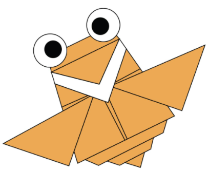
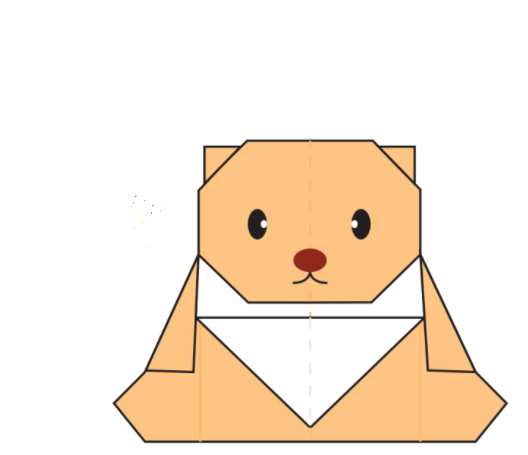
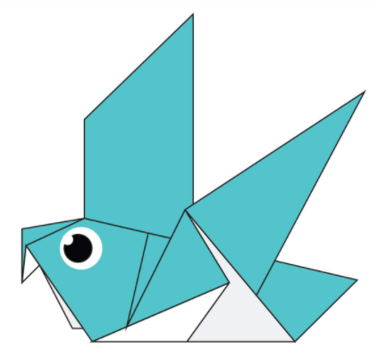
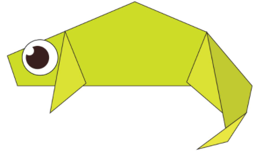
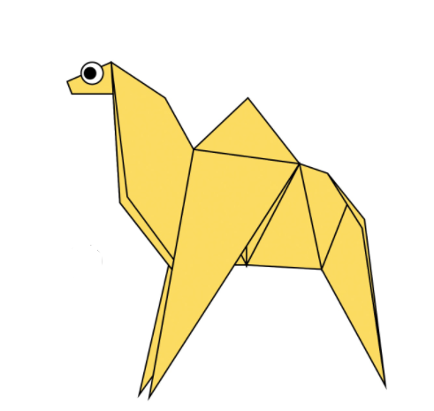

The giant panda is native to China. It has a black and white coat that features large black patches around its eyes.The giant panda, also known as the panda bear or simply the panda, is a bear native to south central China. It is characterised by large, black patches around its eyes, over the ears, and across its round body. The name "giant panda" is sometimes used to distinguish it from the red panda, a neighboring musteloid.
A cicada sloughs off its old skin every spring.They sing on old oak trees. The cicadas are a superfamily, the Cicadoidea, of insects in the order Hemiptera. They are in the suborder Auchenorrhyncha, along with smaller jumping bugs such as leafhoppers and froghoppers.
A teddy bear is a stuffed toy in the form of a bear. ... Since the creation of the first teddy bears which sought to imitate the form of real bear cubs, "teddies" have greatly varied in form, style, color, and material. They have become collector's items, with older and rarer "teddies" appearing at public auctions.
Pigeons are gentle, plump, small-billed birds with a skin saddle (cere) between the bill and forehead. All pigeons strut about with a characteristic bobbing of the head. Because of their long wings and powerful flight muscles, they are strong, swift fliers.
A chameleon is a very unique lizard that belongs to the Chamaeleonidae family. They inhabit warm locations such as rainforests and deserts. They are known to change colors, rapidly shoot their long tongues outward, and move their eyes independently.
Camels are mammals with long legs, a big-lipped snout and a humped back. There are two types of camels: dromedary camels, which have one hump, and Bactrian camels, which have two humps. Camels' humps consist of stored fat, which they can metabolize when food and water is scarce.